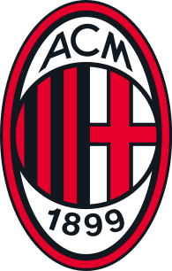
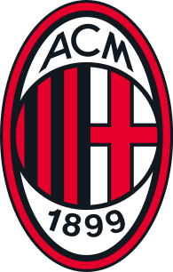
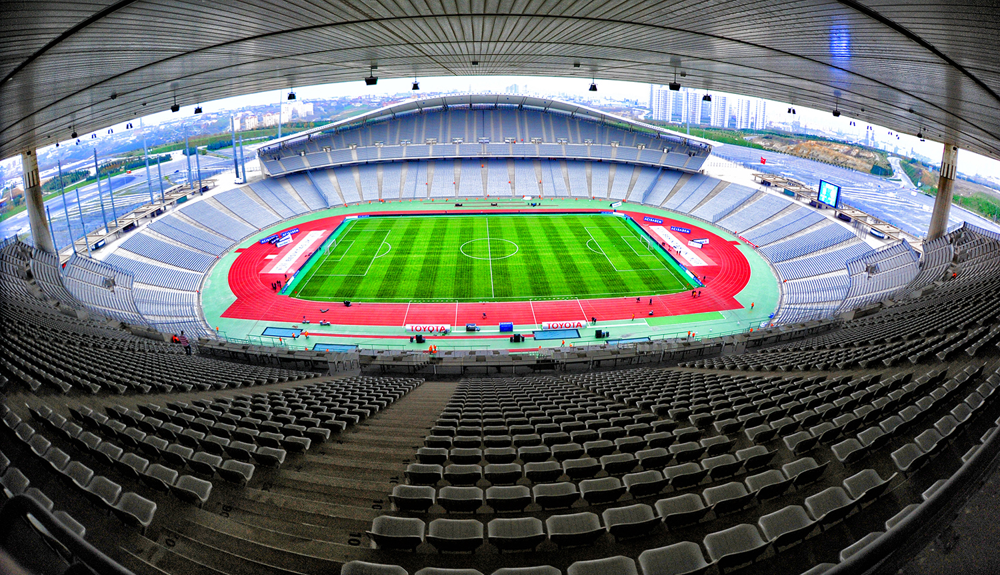

AC Milan


The UEFA Champions League (abbreviated as UCL, or sometimes, UEFA CL) is an annual club football competition organised by the Union of European Football Associations (UEFA) and contested by top-division European clubs, deciding the competition winners through a round robin group stage to qualify for a double-legged knockout format, and a single leg final. It is one of the most prestigious football tournaments in the world and the most prestigious club competition in European football, played by the national league champions (and, for some nations, one or more runners-up) of their national associations.
in 1955 as the Coupe des Clubs Champions Européens (French for European Champion Clubs' Cup), and commonly known as the European Cup, it was initially a straight knockout tournament open only to the champions of Europe's domestic leagues, with its winner reckoned as the European club champion. The competition took on its current name in 1992, adding a round-robin group stage in 1991 and allowing multiple entrants from certain countries since the 1997–98 season.[1] It has since been expanded, and while most of Europe's national leagues can still only enter their champion, the strongest leagues now provide up to four teams.[2][3] Clubs that finish next-in-line in their national league, having not qualified for the Champions League, are eligible for the second-tier UEFA Europa League competition, and since 2021, for the third-tier UEFA Europa Conference League.[4]
In its present format, the Champions League begins in late June with a preliminary round, three qualifying rounds and a play-off round, all played over two legs. The six surviving teams enter the group stage, joining 26 teams qualified in advance. The 32 teams are drawn into eight groups of four teams and play each other in a double round-robin system. The eight group winners and eight runners-up proceed to the knockout phase that culminates with the final match in late May or early June.[5] The winner of the Champions League qualifies for the following year's Champions League, the UEFA Super Cup, and the FIFA Club World Cup.[6][7]
Spanish clubs have the highest number of victories (19 wins), followed by England (14 wins) and Italy (12 wins). England has the largest number of winning teams, with five clubs having won the title. The competition has been won by 22 clubs, 13 of which have won it more than once, and eight successfully defended their title.[8] Real Madrid is the most successful club in the tournament's history, having won it 14 times, including the first five seasons and also five of the last nine.[9] Only one club has won all of their matches in a single tournament en route to the tournament victory: Bayern Munich in the 2019–20 season.[10] Real Madrid are the current European champions, having beaten Liverpool 1–0 in the 2022 final.
| 11/04/2023 | 11/04/2023 | 12/04/2023 | 12/04/2023 |
|---|---|---|---|
|
|
|

AC Milan
|
|
|
|
|
|
|
| Stade de Luz | Etihad Stadium | Stade San Siro | Santiago-Bernabéu |
2022–23 UEFA Champions League is the 68th season of Europe's premier club football tournament organised
by UEFA, and the 31st season since it was renamed from the European Champion Clubs' Cup to the UEFA Champions
League.
The final will be played at the Atatürk Olympic Stadium in Istanbul , Turkey. The stadium was originally
appointed to host the 2020 UEFA Champions League final, but both this and the 2021 final, which had been
subsequently re-allocated to the Atatürk, were moved due to the COVID-19 pandemic. The winner of the 2022–23
UEFA Champions League will automatically qualify for the 2023–24 UEFA Champions League group stage, also earn
the right to play against the winner of the 2022–23 UEFA Europa League in the 2023 UEFA Super Cup, as well as
earning the right to play in the 2023 FIFA Club World Cup in Saudi Arabia.
Real Madrid are the defending champions, having won a record-extending fourteenth title in the
previous edition.
The 2022/23 UEFA Champions League final will take place at Istanbul's Atatürk Olympic Stadium on 10 June 2023.
The 2022/23 UEFA Champions League season will conclude at Istanbul's Atatürk Olympic Stadium on Saturday 10 June 2023. The final will kick off at 21:00 CET (22:00 local time).
Built to support Türkiye's bid to stage the 2008 Olympic Games, the venue opened in
2002 and is home to the Turkish national team. Situated in the Başakşehir area of the city, west of the
Bosphorus, it boasts a seated capacity of over 75,000.
This is the second major UEFA competition final to be
staged at the Atatürk Olympic Stadium, with Liverpool having beaten AC Milan on penalties in the same venue in
the final of the 2005 UEFA Champions League. The Reds triumphed despite trailing 3-0 at half-time, the 'Miracle
of Istanbul' regarded as one of the most sensational comebacks in European football history.

UEFA Champions League trophy stands 73.5cm tall and weighs 7.5kg. "It may not be an artistic masterpiece, but everybody in football is keen to get their hands on it," said creator Jürg Stadelmann. The 2022/23 winners are also assured of a place in the 2023/24 UEFA Champions League group stage, if they have not qualified via their domestic competition.